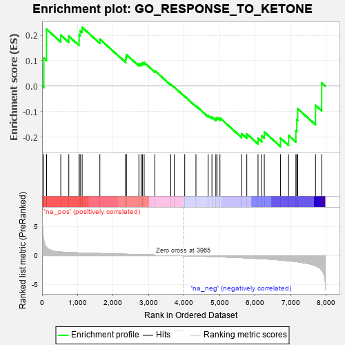
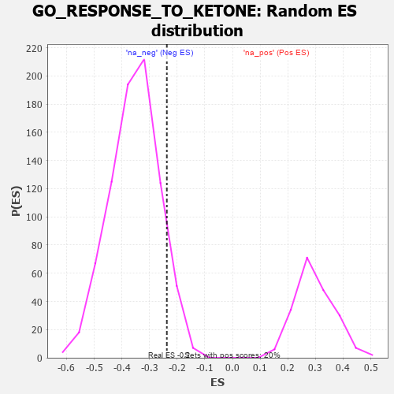

| | | Dataset | 7d |
| Phenotype | NoPhenotypeAvailable |
| Upregulated in class | na_neg |
| GeneSet | GO_RESPONSE_TO_KETONE |
| Enrichment Score (ES) | -0.23740359 |
| Normalized Enrichment Score (NES) | -0.66841 |
| Nominal p-value | 0.9177057 |
| FDR q-value | 1.0 |
| FWER p-Value | 1.0 |
Table: GSEA Results Summary

Fig 1: Enrichment plot: GO_RESPONSE_TO_KETONE
Profile of the Running ES Score & Positions of GeneSet Members on the Rank Ordered List
| PROBE | GENE SYMBOL | GENE_TITLE | RANK IN GENE LIST | RANK METRIC SCORE | RUNNING ES | CORE ENRICHMENT | | 1 | TGFB3 | | | 49 | 2.654 | 0.1096 | Yes |
| 2 | ADCY8 | | | 124 | 1.418 | 0.1621 | Yes |
| 3 | GLB1 | | | 125 | 1.416 | 0.2238 | Yes |
| 4 | RWDD1 | | | 526 | 0.621 | 0.2005 | Yes |
| 5 | ELK1 | | | 752 | 0.545 | 0.1958 | Yes |
| 6 | AKT1 | | | 1040 | 0.476 | 0.1804 | Yes |
| 7 | YAP1 | | | 1041 | 0.475 | 0.2011 | Yes |
| 8 | AIFM1 | | | 1072 | 0.469 | 0.2178 | Yes |
| 9 | SRC | | | 1128 | 0.459 | 0.2309 | Yes |
| 10 | CDK4 | | | 1626 | 0.370 | 0.1843 | No |
| 11 | CDC5L | | | 2353 | 0.253 | 0.1038 | No |
| 12 | SIN3A | | | 2361 | 0.251 | 0.1139 | No |
| 13 | NDOR1 | | | 2372 | 0.250 | 0.1235 | No |
| 14 | SLIT2 | | | 2724 | 0.195 | 0.0878 | No |
| 15 | XRN1 | | | 2786 | 0.185 | 0.0882 | No |
| 16 | PCK2 | | | 2823 | 0.180 | 0.0915 | No |
| 17 | DCPS | | | 2873 | 0.170 | 0.0928 | No |
| 18 | AHR | | | 3175 | 0.126 | 0.0603 | No |
| 19 | CBL | | | 3621 | 0.056 | 0.0066 | No |
| 20 | HSF1 | | | 3718 | 0.039 | -0.0038 | No |
| 21 | PARP1 | | | 4014 | -0.010 | -0.0405 | No |
| 22 | OPA1 | | | 4330 | -0.065 | -0.0774 | No |
| 23 | MTAP | | | 4675 | -0.133 | -0.1149 | No |
| 24 | WBP2 | | | 4780 | -0.153 | -0.1214 | No |
| 25 | SLIT3 | | | 4890 | -0.175 | -0.1275 | No |
| 26 | CBX3 | | | 4923 | -0.183 | -0.1236 | No |
| 27 | KLF4 | | | 5005 | -0.198 | -0.1251 | No |
| 28 | LARP1 | | | 5616 | -0.349 | -0.1868 | No |
| 29 | TLR2 | | | 5761 | -0.395 | -0.1877 | No |
| 30 | CALR | | | 6077 | -0.499 | -0.2057 | No |
| 31 | KLF2 | | | 6182 | -0.532 | -0.1956 | No |
| 32 | TFAP4 | | | 6254 | -0.556 | -0.1803 | No |
| 33 | EGFR | | | 6708 | -0.765 | -0.2040 | No |
| 34 | GHSR | | | 6937 | -0.894 | -0.1938 | No |
| 35 | CFTR | | | 7143 | -1.030 | -0.1747 | No |
| 36 | AR | | | 7169 | -1.046 | -0.1323 | No |
| 37 | TSPO | | | 7194 | -1.065 | -0.0888 | No |
| 38 | ADCY1 | | | 7695 | -1.752 | -0.0755 | No |
| 39 | CALM3 | | | 7869 | -2.525 | 0.0129 | No |
Table: GSEA details [plain text format]

Fig 2: GO_RESPONSE_TO_KETONE: Random ES distribution
Gene set null distribution of ES for GO_RESPONSE_TO_KETONE